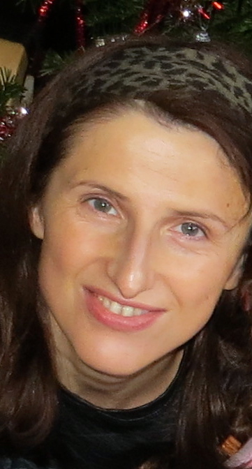

|
|
Cristina Nita-Rotaru
Professor of Computer Science
Associate Dean of Faculty
Khoury College of Computer Sciences
Northeastern University
email: c.nitarotaru@northeastern.edu
office: ISEC 626
Directions
lab: Network and Distributed Systems Security [nds2]
Twitter: @cnitarotaru
Travel blog: unpacked
Research: network security, resilient distributed systems,
automated testing and verification; applications: critical infrastructure, connected cars, blockchains
|
``There is only one success - to be able to spend your life in your own way.''
Christopher Morley

|
Cristina Nita-Rotaru is a Professor of Computer Science in the Khoury College of Computer Sciences
at Northeastern University. Prior to joining Northeastern she was a faculty in the Department of Computer
Science at Purdue University from 2003 to 2015.
Her research lies at the intersection of security,
distributed systems, and computer networks. The overarching goal of her
work is designing and building secure and resilient distributed systems and network protocols,
with assurance that their deployed implementations provide their security, resilience, and performance goals.
Her work received several best paper awards in IEEE SafeThings 2019, NDSS 2018, ISSRE 2017, DSN 2015
as well as two IETF/IRTF Applied Networking Research Prize in 2018 and 2016.
Cristina Nita-Rotaru is a recipient of the NSF Career Award in 2006. She is also a recipient of
Purdue College of Science Research Award in 2013, Purdue Excellence in Research Award, Seeds for Success in 2012,
Purdue College of Science Leadership Award, 2012,
Purdue College of Science Undergraduate Advising Award in 2008, and
Purdue Teaching for Tomorrow Award in 2007.
She has served on the Technical Program Committee of numerous conferences in security, networking and distributed systems (IEEE S&P, USENIX Security, ACM CCS, NDSS, ACM Wisec, IEEE ICDCS, IEEE/IFIP DSN, ACM SIGCOMM, ACM CoNEXT, IEEE INFOCOM, IEEE ICNP, WWW, Eurosys).
She served as an Assistant Director for CERIAS (2011 - 2013).
She is a member of the steering committee of ACM Wisec and IEEE/IFIP DSN, and a member of the IFIP Working Group on Dependable Computing and Fault-tolerance.
She was an Associate Editor for
Elsevier Computer Communications (2008 - 2011),
IEEE Transactions on Computers (2011 - 2014),
ACM Transactions on Information Systems Security (2009 - 2013),
Computer Networks (2012 - 2014),
and IEEE Transactions on Mobile Computing (2011 - 2016), and
IEEE Transactions on Dependable and Secure Systems (2013 - 2017).
Cristina Nita-Rotaru holds a Ph.D in Computer Science from Johns Hopkins
University and a MS from Politehnica University of Bucharest, Romania.
She was born and grew up in Bucharest, Romania. She is an alumnus of
``Colegiul National Sfantul Sava''.
My research lies at the intersection of information security, distributed systems, and computer networks. The overarching goal of my work is creating and building robust distributed systems and network protocols that achieve their security, availability, and performance design goals in spite of misconfigurations, failures, and attacks. My research combines theoretical principles and experimental methodologies from distributed systems, cryptography, networking, information theory, machine learning, and software engineering to create systems and protocols based on provable guarantees and validated in realistic network environments.
My research has been funded by NSF, DARPA, Verisign, Toyota ITC, Visa Research, PwC, Google, Ripple.
For detailed information about the active projects check our lab webpage NDS2 Lab.
Current students:
- Matthew Jagielski, co-advised with Alina Oprea
- Max von Hippel, co-advised with Stavros Tripakis
- Cliff Robinson, co-advised with Alina Oprea
- Asad Salman
- Ben Weintraub
- Connor Zanin, co-advised with Alan Mislove
Former graduate students and postdocs that I had the privilege to work with at Purdue at Northeastern:
- Postdocs: Reza Curtmola (Ph.D. Johns Hopkins University, 2007), Associate Professor NJIT;
Endadul Hoque, (Ph.D. Purdue University Dec. 2015), Assistant Professor, Florida International University.
- Ph.D: Samuel Jero, (Ph.D. Purdue University, May 2018), MIT Lincoln Labs;
Hyojeong Lee (co-advised with Prof. C. Killian, Ph.D. Purdue University, Sept. 2014), Google;
Andrew Newell, (Ph.D. Purdue University, Aug. 2014), Facebook;
Rahul Potharaju (Ph.D. Purdue University, May 2014), Microsoft;
Jeffrey Seibert, (Ph. D Purdue University, May 2012), Google;
David Zage, (Ph.D. Purdue University, May 2010), Intel;
Jing Dong, (Ph.D. Purdue University, Dec. 2009), Knight Equity Markets;
Mercan Topkara (co-advised with Prof. M. Atallah, Ph.D. Purdue University, July 2007), IBM T.J. Watson.
Bogdan Carbunar (co-advised with Prof. A. Grama and Prof. J. Vitek), (Ph.D. Purdue University, May 2005), Associate Professor, Florida International University.
- M.S.:
Anthony Peterson, (M.S. Northeastern University, May 2019),
Berkcan Gurel, (M.S. Northeastern University, May 2019),
Caleb Wastler, (M.S. Northeastern University, May 2019),
Supraja Krishnan, (M.S. Northeastern University, May 2018),
Luojie Xiang, Apple (M.S. Purdue University, May 2014), Camille Gaspard, CISCO (M.S. Purdue University, May 2009),
Aaron Walters, founding partner of Volatile Systems (M.S. Thesis, Purdue University May 2006),
Chi-Bun (Ben) Chan, Xilinx Inc, (M.S. Purdue University Dec. 2004).
Courses taught at Northeastern University:
- Distributed Systems (CS 7610), Fall 2019. [www].
- Distributed Systems (CS 7610), Fall 2018. [www].
- Computer networks (CS 5700), Fall 2017. [www].
- Distributed systems (CS 7680), Spring 2017. [www].
- Network security (CS 6740), Spring 2016. [www].
Courses I taught as a faculty at Purdue University:
- Graduate level:
Distributed Systems [www ],
Advanced Distributed Systems,
Information Security and Assurance) [www ],
Advanced Information Assurance,
Cryptography.
- Undergraduate level:
Introduction to C [www],
Introduction to Cryptography [www],
Computer Security.
Conferences I am currently involved with: ACM CCS 2020, IEEE DSN 2020.
Some of the conferences that I have been involved with:
IEEE S&P, NDSS, USENIX Security, ACM CCS, ACM WISEC, IEEE DSN, IEEE ICDCS, Euro S&P
ACM SIGCOMM, ACM CoNEXT, IEEE ICNP, SoCC,
USENIX ATC, Eurosys, WWW
Some of the journals I was an Associate Editor for:
IEEE TDSC, IEEE TMC, IEEE TC,
ACM TOPS (former ACM TISSEC).
Send your comments and questions to Cristina Nita-Rotaru
|
|
|